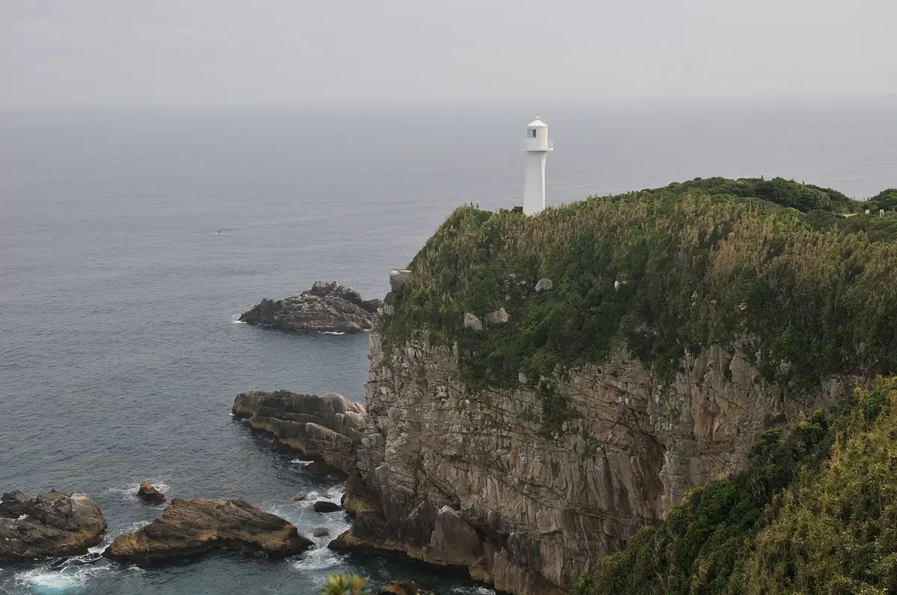

Japan / Kochi / Tosashimizu
Tosashimizu
Tosashimizu · Kochi
Tosashimizu
Highlighted on the Kochi map.

Stay
TheMana Village
Tosashimizu, Kochi · 0880-88-1111 · Official / source link
Ashizuri Onsen Sato Ashizuri Kokusai Hotel
Tosashimizu, Kochi · 0880-88-0201 · Official / source link
Ashizuri Onsen Sato Ashizuri Saniisaido Hotel
Tosashimizu, Kochi · 0880-88-0331 · Official / source link
Ashizuriterume
Tosashimizu, Kochi · 0880-88-0301 · Official / source link
Ashizuri Onsen Sato Hotel Ashizuri Sono
Tosashimizu, Kochi · 0880-88-0033 · Official / source link
Minshuku Kan
Tosashimizu, Kochi · 0880-88-0059 · Official / source link
Ashizurimisaki Minshuku Fukuda Ie
Tosashimizu, Kochi · Official / source link
OUCHI HOTEL Hibi
Tosashimizu, Kochi · 090-9456-0563 · Official / source link
Guest House Dai Shi Beach
Tosashimizu, Kochi · 050-7123-3331 · Official / source link
Su no Piiku Tosashimizu Kyanpufiirudo
Tosashimizu, Kochi · 0880-87-9789 · Official / source link
Dining
Azzurrissimo
Tosashimizu, Kochi · 0880-88-1113 · Official / source link
Man Sushi
Tosashimizu, Kochi · 0880-82-2116 · Official / source link
Teppan Tanabe
Tosashimizu, Kochi · 0880-82-3684 · Official / source link
Oka Yanagi
Tosashimizu, Kochi · 0880-87-9701 · Official / source link
Ashizuri Gu Land Resuto
Tosashimizu, Kochi · 0880-88-0326 · Official / source link
Sengyo Ichihatsu
Tosashimizu, Kochi · 080-6372-8690 · Official / source link
Fukuda Ie
Tosashimizu, Kochi · 0880-88-0529 · Official / source link
Pekin
Tosashimizu, Kochi · 0880-82-1963 · Official / source link
Yakiniku Purukogi Tosashimizu Mise
Tosashimizu, Kochi · 0880-82-5100 · Official / source link
Hobai
Tosashimizu, Kochi · Official / source link
Yama no O Wan
Tosashimizu, Kochi · Official / source link
Izakaya Doraku Tei
Tosashimizu, Kochi · 0880-82-3667 · Official / source link
Rikyu Ie
Tosashimizu, Kochi · 090-4334-0343 · Official / source link
Kochi Prefectural Ashizuri Kaiyo Kan Satomi
Tosashimizu, Kochi · 0880-85-0635 · Official / source link
Wa Dainingu Fukami
Tosashimizu, Kochi · 0880-82-0267 · Official / source link
Asagohan Ya
Tosashimizu, Kochi · 070-5263-8649 · Official / source link